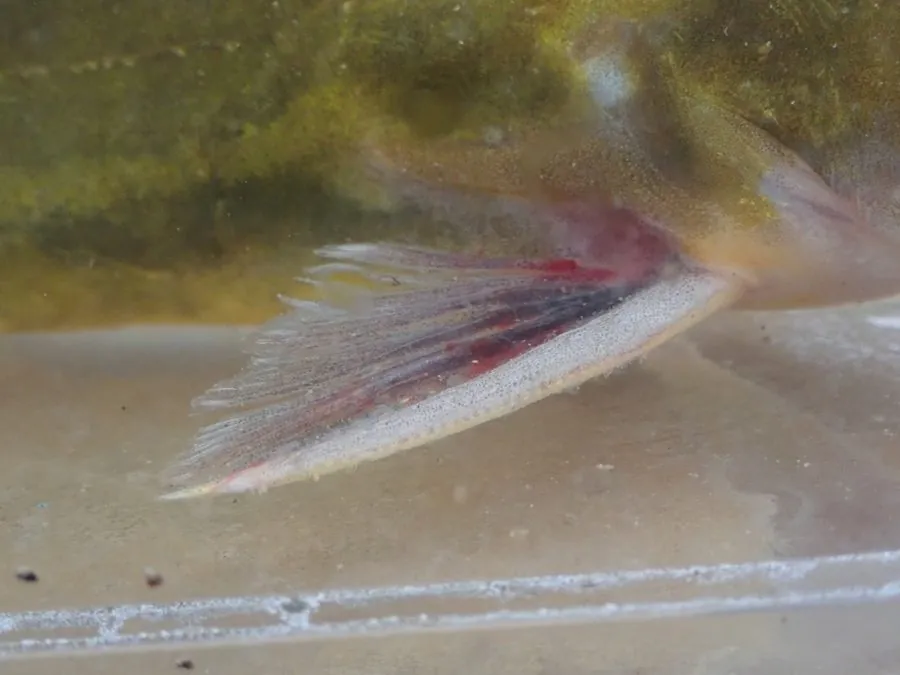

鱼类 · 动物界
黄颡鱼 Tachysurus fulvidraco

中国常见的黄褐色小型鲶类，背鳍和胸鳍有带毒的硬棘，被刺后疼痛难忍，是江河湖泊中常见的食用鱼。
- 分类
- 门脊索动物门纲硬骨鱼纲目鲇形目科鲿科属黄颡鱼属
- 栖息环境
- 江河、湖泊和沟渠的底层，喜缓流、水草和石缝环境
- 地理分布
- 中国长江、黄河、珠江、黑龙江等水系，以及朝鲜半岛
- 保护级别
- 暂无评估；中国未列入国家重点保护野生动物名录
物种志
黄颡鱼体呈长形，后部侧扁，头宽扁，口大，口周有 4 对须。体表无鳞，体色黄褐，体侧常有不规则的深色斑纹，腹部浅黄。背鳍和胸鳍各有一根坚硬的棘，棘上带有锯齿和毒腺，这是它重要的防御武器。成鱼体长一般 15–25 cm，体重 50–150 g，最大约 30 cm。
黄颡鱼分布于中国长江、黄河、珠江、黑龙江等水系以及朝鲜半岛，是典型的底栖鱼类，喜欢缓流、水草和石缝环境，昼伏夜出。它是杂食偏肉食性鱼类，吃水生昆虫、小鱼、虾类和软体动物。繁殖期在 5–7 月，雄鱼在洞穴中守护鱼卵，直到幼鱼孵化。黄颡鱼的背鳍和胸鳍毒棘是它的防御武器，被刺后伤口会红肿剧痛，处理渔获时需要小心。它是南方江河湖泊中常见的食用小杂鱼，因肉质细嫩、刺少而受欢迎，人工养殖规模也在扩大。目前它没有IUCN 的正式评估，中国未将其列入国家重点保护野生动物名录。
形态与习性
- 食性杂食偏肉食，吃水生昆虫、小鱼、虾类和软体动物
- 体长一般 15–25 cm，最大约 30 cm
- 体重常见 50–150 g
- 繁殖5–7 月产卵，雄鱼在洞穴中守护鱼卵
- 毒棘背鳍和胸鳍各有一根带毒腺的硬棘，被刺后剧痛
- 习性昼伏夜出，白天藏在石缝和洞穴中
趣味知识
- 黄颡鱼的背鳍和胸鳍各有一根带毒腺的硬棘，被刺中会剧痛难忍。
- 它俗称“黄辣丁”“昂刺鱼”，是南方江河湖泊中最常见的食用小杂鱼之一。
- 黄颡鱼雄鱼会在洞穴中守护鱼卵，直到幼鱼孵化。